Krylov Module¶
Let 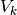 be an orthogonal matrix whose columns 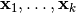
span an arbitrary Krylov subspace 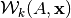 of
dimension  . We obtain an approximation of
. We obtain an approximation of  by
by
(3)¶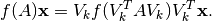
Different methods for the approximation of matrix functions are obtained for different choices of the projection spaces .
Given a set of scalars 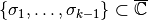
in the the extended complex plane 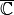, that are not
eigenvalues of  , let
, let
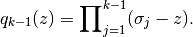
The rational Krylov subspace of order associated with ,
 and 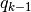 is defined by
and 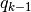 is defined by
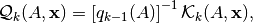
where
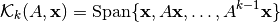
is the standard polynomial Krylov space.
By defining the matrices
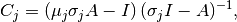
where 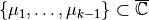 are such that 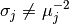, it is known that the rational Krylov space can also be written as follows [2]
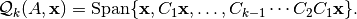
This general formulation allows to recast most of the classical Krylov methods in terms of a rational Krylov method with a specific choice of 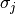 and 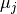. In particular,
 .
.The PSFUN library contains the implementation of several flavour of these methods
that can be used for the computation of (3), the field
in the psfun_d_krylov type represent the options neeeded to for setting
up and applying the different implemented method for a given matrix function
fun (represented by an object of type psfun_d_serial).
Table 2 has the info on the method available.
Method |
Class |
Matrix Type |
|
Source |
|---|---|---|---|---|
Arnoldi |
Polynomial |
General |
|
|
Lanczos |
Polynomial |
Symmetric |
|
Stopping Criterion¶
Module¶
Description
The psfun_d_krylov_mod contains the generic call to a Krylov subspace
method for the computation of 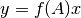, for large and
sparse.
Quick access
- Routines
Needed modules
psb_base_modpsfun_d_serial_mod: This module contains the generic interfaces for the computation of the different matrix functions included in the library. The idea is that this modules computes, in a serial way, ….
….
Types
-
type
psfun_d_krylov_mod/unknown_type¶ - Type fields
%kname[character,optional/default=’arnoldi’]
-
type
Variables
Subroutines and functions
-
subroutine
psfun_d_krylov_mod/psfun_d_setstring(meth, what, val, info)¶ Set function for setting options defined by a string
- Parameters
meth
what [character,in]
val [character,in]
info [integer,out]
- Use
psb_base_mod
-
subroutine
psfun_d_krylov_mod/psfun_d_parallel_apply(meth, fun, a, desc_a, y, x, eps, info[, itmax[, itrace[, istop[, iter[, err]]]]])¶ This is the generic function for applying every implemented Krylov method. The general iteration parameters (like the number of iteration, the stop criterion to be used, and the verbosity of the trace) can be passed directly to this routine. All the constitutive parameters of the actual method, and the information relative to the function are instead contained in the meth and fun objects. The Descriptor object :p psb_desc_type desc_a [in]: Descriptor for the sparse matrix
- Parameters
meth :: Krylov method object
fun [psfun_d_serial,inout] :: Function object
a [psb_dspmat_type,in] :: Distribute sparse matrix
y [psb_d_vect_type,inout] :: Output vector
x [psb_d_vect_type,inout] :: Input vector
eps [real,in] :: Requested tolerance
info [integer,out] :: Output flag
itmax [integer,in,] :: Maximum number of iteration
itrace [integer,in,] :: Trace for logoutput
istop [integer,in,] :: Stop criterion
iter [integer,out,] :: Number of iteration
err [real,out,] :: Last estimate error
- Use
psb_base_mod,psfun_d_serial_mod